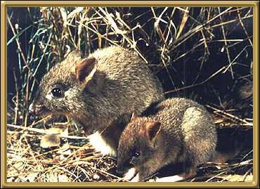
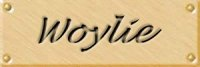

Woylie or Brush tailed Bettong - This was an endangered species, but as a direct result of a recovery program it has been moved off the endangered species list! However, it is still considered vulnerable, and in need of controlled recovery. This little creature is the world's smallest and rarest kangaroo, a mere 200mm (less than 1 inch) in size.
Photographer: Unknown